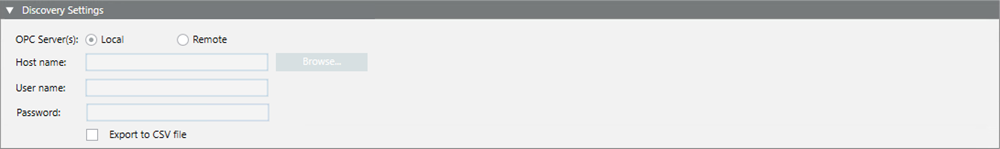
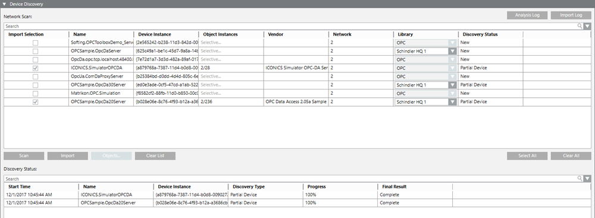
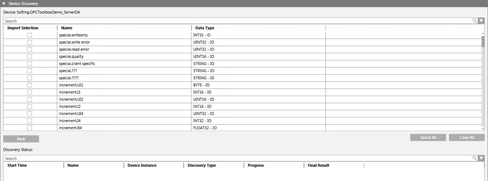

Third-party OPC DA Discovery Workspace
Desigo CC discovery feature allows scanning the local or remote computer for OPC servers and OPC items to import.
OPC DA Discovery Settings
The Discovery Settings expander allows specifying the local or remote machine host where the OPC servers discovery will be performed. For instructions, see Configuring OPC DA Discovery Settings.

User and password settings are required only when browsing for a remote host.
Note that if two OPC servers on the same host have different credentials, an OPC network for each OPC server must be configured.
Also, a special option allows exporting the OPC configuration after the discovery on the specified computer of OPC servers and OPC items. For instructions, see Exporting the OPC Configuration.
OPC DA Device Discovery
The Device Discovery expander allows scanning the local or remote machine for OPC servers. For each discovered OPC server the following data displays in the Network Scan section:
- Name: Description of the OPC server (Prog ID of the OPC servers that support the OPC DA interface V3.0, V2.05, or 1.0).
- Device Instance: Class ID of the object to which to connect.
- Object Instances: Number of selected OPC items and total number of OPC items of an OPC server. Note that this information displays only after the discovery of the OPC items for the selected OPC servers.
- Vendor: Information of the OPC server supplier. Note that this information displays only after the discovery of the OPC items for the selected OPC servers.
- Network: Number of the driver associated to the OPC network.
- Library: Compatible selected library. You can select the custom OPC library that includes the discovery rules to use for the OPC import. Among these elements, the standard OPC library (available with Desigo CC set up) always displays.
- Discovery Status:
- New: The OPC server has been never imported before.
- Partial Device: The OPC server was already imported.
You can:
- Cancel the OPC server scan.
- Make your selections of the scanned OPC servers. You can choose to import one or more OPC servers by selecting the corresponding check box in the Import Selection column, or you can click Select All to select all the OPC servers scanned. Finally, you can clear the OPC servers list.
- Search for any OPC items of the selected OPC servers.
- Import the OPC servers and OPC items. In particular, you can discover the OPC servers and all of their OPC items, or the OPC servers and a partial list of their OPC items.
- In [Installation Drive]:\[Installation Folder]\[Project Name]\data\OPCDiscovery, the file OPCDiscovery.csv is created and contains the data that is passed with the discovery. This file is overwritten any time the Import button is clicked. If required, the user can edit this file, save the changes, and import it manually.
- An analysis log is available and shows the OPC items whose data types are not supported and consequently will not be imported. The analysis log is appended until the user clicks Clear List.
- An import log is available and shows a summary of all activities.
- You can save the analysis log and import log for further analysis in a .txt file.

When you select one or more OPC servers for the import, by clicking the Objects button in the Device Discovery expander, for each discovered OPC item the following data displays:
- Name: Address of the OPC item
- Data Type: Type and direction of the OPC item

You can:
- Cancel the OPC items discovery.
- Make your selections of the OPC items found. You can choose to import one or more OPC items by selecting the corresponding check box in the Import Selection column, or you can click Select All to select all the OPC items found.
- Finally, you can clear the list of the OPC items and go back to the list of the scanned OPC servers.
For each imported OPC server and its OPC items, the following data displays in the Discovery Status section:
- Start Time: Import operation start time
- Name: Description of the imported OPC server
- Device Instance: Class ID of the object to which to connect
- Discovery Type: Equivalent to Discovery Status =
Partial Device - Progress: Import completion percentage
- Final Result:
- Progressing: Import operation is in progress.
- Complete: Import completed.
- None: No data was imported. This will happen when no OPC item was selected for the OPC server selected for the import.
- Error: Connection problem with the OPC server. Check DCOM troubleshooting with remote OPC Server. See DCOM Errors and Troubleshooting.
- Warning: Import anomalies. Check the import log for further investigation.
- Import Error: Import failed for some reason. Check the import log for further investigation.
When imported, the OPC items are grouped in order to create a single node into the project, mapped to more than one single OPC item. In particular, if a set of OPC items has the same first part of the address and – based on the mapping rules – these OPC items are mapped on the same object type but to different properties, one single node will be created into the project. Also, all these OPC items will be mapped onto the different properties of this node.
NOTE: In a multiple Desigo CC client scenario, the operations carried out on one Desigo CC client (scan, import, or clear list) are automatically repeated on the others.
Validation for OPC DA Discovery
When a rediscovery of OPC Servers is carried out, the validation level is checked for the OPC servers with higher validation profile. Check that the OPC network is set with the same validation profile as these OPC servers or higher: a rediscovery of OPC servers with a higher validation profile will not be executed. For background information about validation, see the reference section.